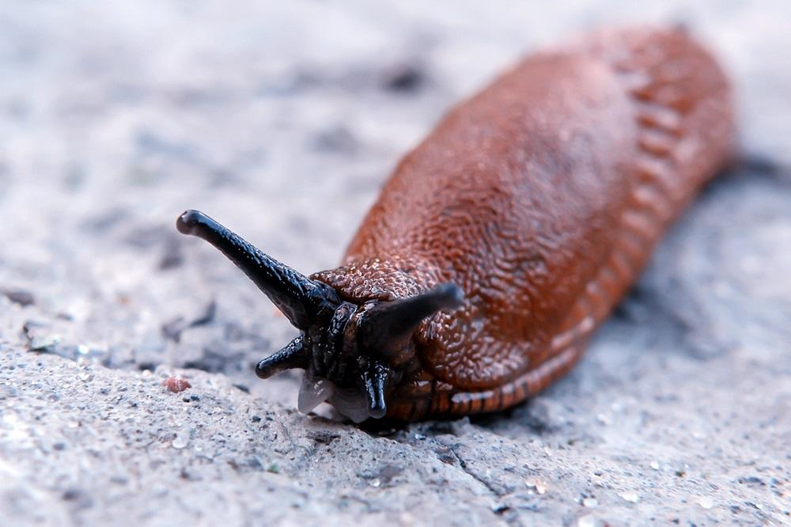

1. Artrópodos
2. Equinodermos
3. Moluscos
4. Esponjas
5. Nematodos
Exoesqueleto de quitina y patas articuladas.
Simetría pentarradiada, esqueleto de piezas calcáreas.
Presencia de una estructura conocida como manto, un órgano llamado rádula y la estructura de su sistema nervioso.

Carecen de boca y de aparato digestivo. Dependen de la digestión intracelular.
Cuerpo sin segmentos y cubiertos de una cutícula hialina, marcada por estrías u otras marcas.